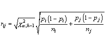
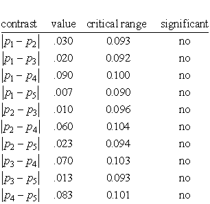

|
7.
Product and Process Comparisons
7.4. Comparisons based on data from more than two processes 7.4.6. How can we make multiple comparisons?
|
|||
|
A procedure to simultaneously test the differences of all pairs of
proportions when there are several populations under investigation
The test criteria for the absolute value of the difference of a pair
of proportions
Example
|
Earlier,
we discussed how to test whether several populations have the same proportion
of defects. The example given there led to rejection of the null hypothesis
of equality.
Rejecting the null hypothesis only allows us to conclude that not (in
this case) all lots are equal with respect to the proportion of defectives.
However, It does not tell us which lot or lots caused the rejection.
The Marascuillo Procedure Assume we have samples of size ni (i = 1, 2, ..., k) from k populations. The first step of this procedure is to compute the differences pi - pj , (where i is not equal to j) among all k(k-1)/2 pairs of proportions. The absolute values of these differences are the test-statistics. Step 2 is to pick a significance level and compute the the corresponding critical values for the Marascuilo procedure from  The third and last step is to compare each of the k(k-1)/2 test statistics against its corresponding critical rij value. Those pairs that have a test statistic that exceeds the critical value are significant at the a level. Example To illustrate the Marascuillo procedure we use the data from the previous example. Since there were 5 lots, there are (5 x 4)/2 = 10 possible pairwise comparisons to be made and ten critical ranges to compute. The five sample proportions are:
p1 = 36/300 = .120
For an overall level of significance of .05, the upper-tailed critical
value of the chi-square distribution having four degrees of freedom is
11.143 and the square root of 11.143 is 3.338. Calculating the 10
absolute differences and the 10 critical values leads to the following
summary table.
 A difference is statistically significant if its value exceeds the critical range value. In this example, even though the null hypothesis of equality was rejected earlier, there is not enough data to conclude any particular difference is significant. Note, however, that all the comparisons involving population 4 come the closest to significance - leading us to suspect that more data might actually show that population 4 does have a significantly higher proportion of defects. |
||